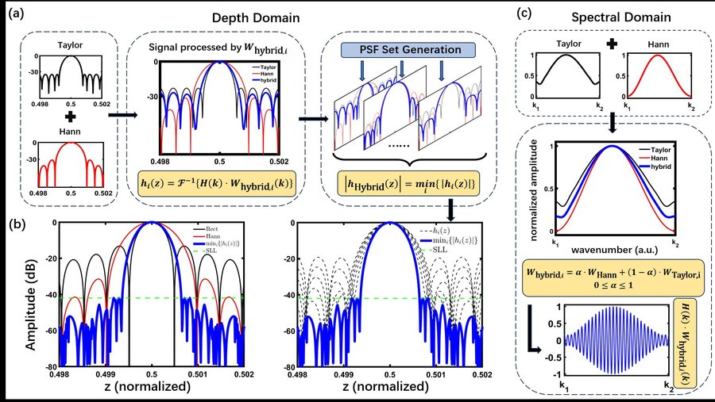

I work on computational optical imaging, with a focus on signal processing algorithms for optical coherence tomography (OCT)—including spectral windowing for sidelobe suppression and statistical frameworks for speckle noise reduction. I am interested in graduate programs in computational imaging and biomedical photonics.
My work sits at the intersection of Fourier optics and statistical signal processing, with applications in biomedical imaging. Representative publications are listed below.
